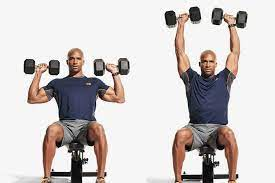
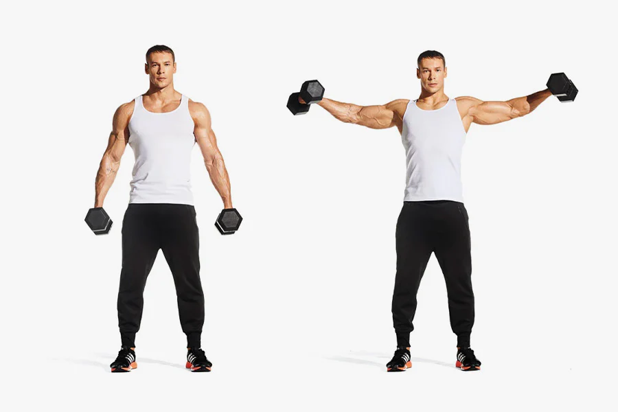
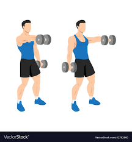
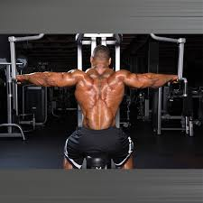
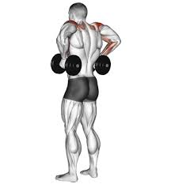

Seated Dumbbell Press

The seated dumbbell press is a great exercise for building shoulder strength and size. To perform this exercise, sit on a bench with a backrest and hold a pair of dumbbells at shoulder height with your palms facing forward. Press the dumbbells upward until your arms are fully extended, then slowly lower them back down to the starting position.
Arnold Press

The Arnold press is a variation of the seated dumbbell press that targets the front and side delts. To perform this exercise, start with the dumbbells in a neutral grip position at shoulder height. Press the dumbbells up and twist your palms forward as you extend your arms overhead. Reverse the motion on the way down to return to the starting position.
Lateral Raise

The lateral raise is a great exercise for targeting the side delts. To perform this exercise, stand with your feet shoulder-width apart and hold a pair of dumbbells at your sides with your palms facing inward. Raise the dumbbells out to your sides until they reach shoulder height, then slowly lower them back down to the starting position.
Front Raise

The front raise is a great exercise for targeting the front delts. To perform this exercise, stand with your feet shoulder-width apart and hold a pair of dumbbells in front of your thighs with your palms facing down. Raise the dumbbells up in front of your body until they reach shoulder height, then slowly lower them back down to the starting position.
Rear Delt Fly

The rear delt fly is a great exercise for targeting the rear delts. To perform this exercise, bend forward at the waist with a slight bend in your knees and hold a pair of dumbbells with your palms facing each other. Raise the dumbbells out to your sides until they reach shoulder height, then slowly lower them back down to the starting position.
Dumbbell Rear Delt Pulls

Dumbbell Rear Delt Pulls are a great exercise for targeting the rear deltoid muscle. To perform this exercise, stand with your feet shoulder-width apart and hold a dumbbell in each hand. Bend your knees slightly and lean forward at the waist, keeping your back straight. Lift the dumbbells out to the sides, squeezing your shoulder blades together at the top of the movement. Slowly lower the dumbbells back down to the starting position and repeat for several reps.